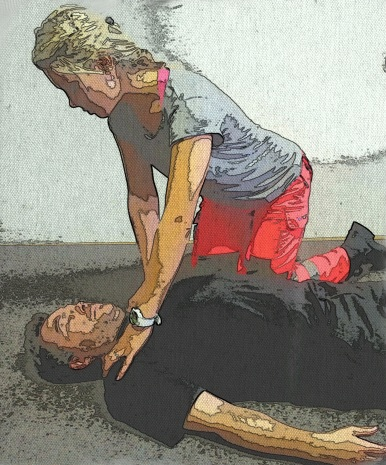
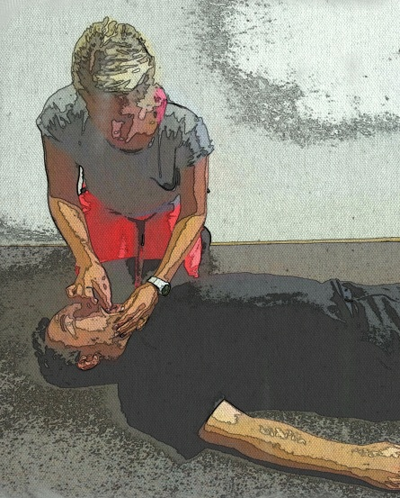

TEMELJNI POSTOPKI OŽIVLJANJA ODRASLIH
Kljub pomoči ekip nujne medicinske pomoči veliko ljudi po srčnem zastoju umre. Razlog je v neopravljanju temeljnih postopkov oživljanja pri očividcih. Zaradi tega temeljni postopki oživljanja spadajo med postopke prve pomoči, ki rešujejo življenje. Pomen oživljanja je lepo prikazan s tako imenovano verigo preživetja. Veriga je namreč močna toliko, kot je močan njen najšibkejši člen. Vsako minuto se možnost preživetja zmanjša za deset odstotkov.
Slika 1. Veriga preživetja
1. PRISTOP K POŠKODOVANCU
Ob pristopu na mesto nesreče preverimo, ali je to varno (za nas in poškodovanca – pomislimo na nalete vozil, električni tok, domače živali, spolzka tla, ostre predmete …).
2. PREVERJANJE ODZIVNOSTI
Ob pristopu k poškodovancu ga primemo za rame in ga nežno (zaradi možnosti poškodbe hrbtenice) stresemo in glasno ga pokličemo. Na primer: »Ali ste v redu?«

Slika 2. Preverjanje odzivnosti
Če se poškodovani odzove, oživljanje ni potrebno. Poškodovanca pustimo v položaju, kot smo ga našli, in preverimo, ali potrebuje pomoč. V kolikor potrebuje pomoč, mu pomagamo in po potrebi pokličemo 112.
Če se poškodovanec ne odzove in smo na kraju nesreče sami, glasno zakličemo: »Na pomoč!« S tem pritegnemo pozornost okolice.
3. SPROSTITEV DIHALNE POTI IN OCENA DIHANJA
Poškodovancu sprostimo dihalno pot s tem, da mu previdno vzvrnemo glavo vznak in dvignemo spodnjo čeljust, s čimer odmaknemo jezik in omogočimo prost pretok zraka v pljuča. Preverimo tudi ustno votlino, da izključimo možnost morebitnih tujkov. Vse vidne tujke odstranimo.
 
Sliki 3 in 4. Sprostitev dihalne poti

Slika 5. Preverimo ustno votlino.
 NAZAJ
NAZAJ